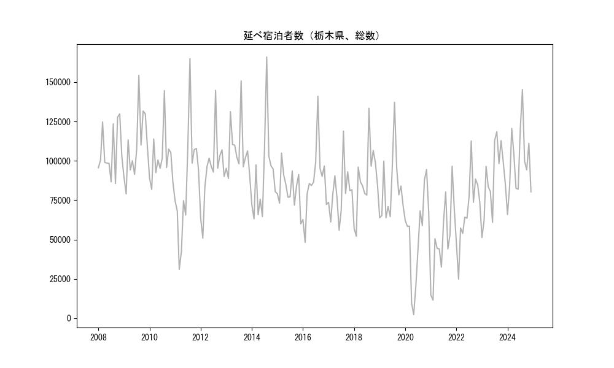
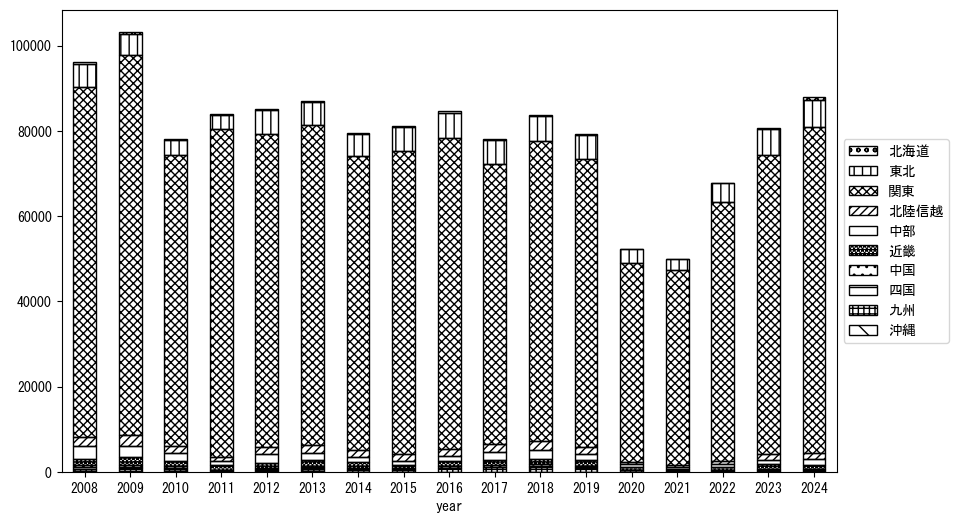
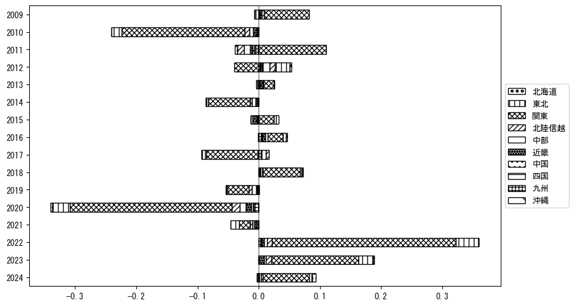
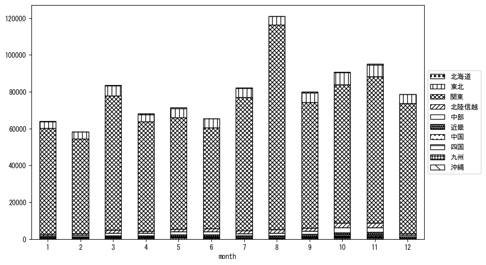
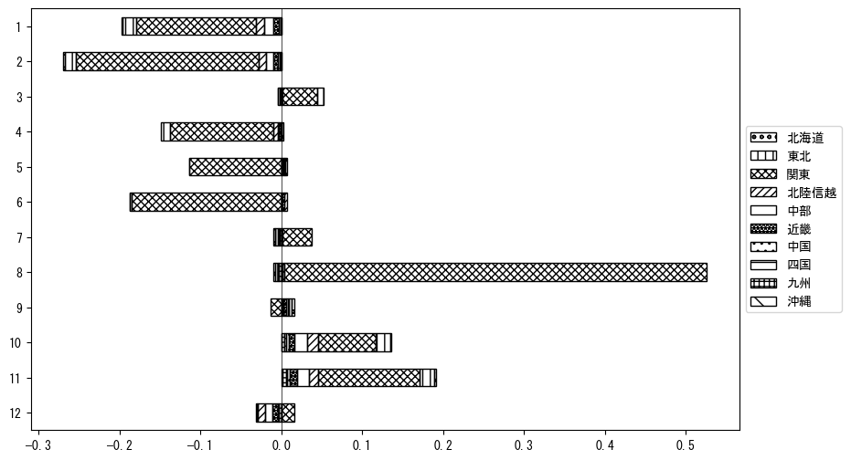

-
トップ
-
栃木県
栃木県
１．延べ宿泊者（総数）の推移
時系列グラフ

図１：栃木県内の従業員数100人以上の宿泊施設での延べ宿泊者数（国外、居住地不詳を含む総数）。
基本統計量
表１：従業員数100人以上の宿泊施設での延べ宿泊者の総数（国外、および居住地不詳を含む）に関する基本統計量。単位は人。平均は１か月あたりの平均値を表す。図１に対応。
| 2008年 |
106,064 |
15,953 |
85,557 (9月) |
129,800 (11月) |
| 2009年 |
109,150 |
21,141 |
78,989 (2月) |
154,293 (8月) |
| 2010年 |
101,151 |
16,503 |
81,842 (2月) |
144,641 (8月) |
| 2011年 |
86,416 |
35,383 |
31,053 (3月) |
164,905 (8月) |
| 2012年 |
93,795 |
22,994 |
50,856 (2月) |
144,789 (8月) |
| 2013年 |
106,849 |
17,835 |
88,806 (2月) |
150,834 (8月) |
| 2014年 |
90,653 |
28,544 |
63,162 (2月) |
165,949 (8月) |
| 2015年 |
82,325 |
11,955 |
59,931 (12月) |
104,929 (3月) |
| 2016年 |
86,754 |
22,613 |
48,185 (2月) |
141,019 (8月) |
| 2017年 |
79,895 |
16,271 |
55,919 (6月) |
118,912 (8月) |
| 2018年 |
87,801 |
21,564 |
52,092 (2月) |
133,426 (8月) |
| 2019年 |
82,722 |
21,903 |
63,771 (4月) |
137,191 (8月) |
| 2020年 |
52,674 |
28,844 |
2,261 (5月) |
94,480 (11月) |
| 2021年 |
50,223 |
24,799 |
11,480 (2月) |
96,578 (11月) |
| 2022年 |
68,478 |
22,310 |
24,851 (2月) |
112,675 (8月) |
| 2023年 |
88,497 |
21,929 |
51,234 (1月) |
118,508 (8月) |
２．宿泊者数の重心（年平均の推移）
図２：栃木県内の従業員数100人以上の宿泊施設での宿泊者数（国外、居住地不詳を除く）の重心（年平均の推移）。
全画面表示
重心の前年平均からの移動距離と方位、および緯度・経度
表２：重心の前年平均からの移動距離と方位、および緯度・経度。図２に対応。
| 2008年 |
— |
— |
36.0961 |
139.5440 |
| 2009年 |
南 |
3.4km |
36.0653 |
139.5440 |
| 2010年 |
南南東 |
1.1km |
36.0562 |
139.5494 |
| 2011年 |
東 |
14.5km |
36.0785 |
139.7079 |
| 2012年 |
西北西 |
7.5km |
36.1017 |
139.6296 |
| 2013年 |
南西 |
4.8km |
36.0765 |
139.5863 |
| 2014年 |
東北東 |
3.6km |
36.0870 |
139.6240 |
| 2015年 |
東北東 |
7.5km |
36.1234 |
139.6947 |
| 2016年 |
西 |
6.1km |
36.1165 |
139.6280 |
| 2017年 |
西南西 |
9.1km |
36.0902 |
139.5321 |
| 2018年 |
南西 |
1.7km |
36.0784 |
139.5208 |
| 2019年 |
東北東 |
2.6km |
36.0871 |
139.5472 |
| 2020年 |
東 |
10.7km |
36.0841 |
139.6664 |
| 2021年 |
東 |
8.2km |
36.0744 |
139.7569 |
| 2022年 |
西 |
1.3km |
36.0737 |
139.7421 |
| 2023年 |
北西 |
4.5km |
36.1035 |
139.7074 |
運輸局別延べ宿泊者数
時系列（年平均）

図３：栃木県内の従業員数100人以上の宿泊施設での１か月あたり平均宿泊者数（国外、居住地不詳を除く）の運輸局別内訳。
寄与度（前年からの変化率に対する）

図４：栃木県内の従業員数100人以上の宿泊施設での運輸局別宿泊者数（国外、居住地不詳を除く）から求めた寄与度。
３．宿泊者数の重心（月別）
図５：栃木県内の従業員数100人以上の宿泊施設での宿泊者数（国外、居住地不詳を除く）の重心（月別）。観測期間は2008年1月から2023年12月まで。
全画面表示
全期間（2008年1月～2023年12月）の平均と月別平均の比較
表３：全期間の平均から月別平均までの移動距離と方位、および緯度・経度。図５に対応。
| 全期間 |
— |
— |
36.0870 |
139.6238 |
| 1月 |
東北東 |
6.3km |
36.1068 |
139.6895 |
| 2月 |
北東 |
4.0km |
36.1111 |
139.6567 |
| 3月 |
東北東 |
4.7km |
36.1105 |
139.6672 |
| 4月 |
北北西 |
2.5km |
36.1084 |
139.6142 |
| 5月 |
西北西 |
4.5km |
36.1083 |
139.5818 |
| 6月 |
西北西 |
8.1km |
36.1159 |
139.5406 |
| 7月 |
東南東 |
4.4km |
36.0656 |
139.6650 |
| 8月 |
南南東 |
17.0km |
35.9491 |
139.7058 |
| 9月 |
南西 |
5.0km |
36.0527 |
139.5872 |
| 10月 |
西 |
8.1km |
36.0899 |
139.5343 |
| 11月 |
西 |
10.3km |
36.0758 |
139.5099 |
| 12月 |
北東 |
12.1km |
36.1504 |
139.7335 |
運輸局別延べ宿泊者数
月別平均（2008年1月～2023年12月）

図６：栃木県内の従業員数100人以上の宿泊施設での宿泊者数（国外、居住地不詳を除く）の運輸局別内訳（月別）。
寄与度（全期間の平均から月別平均への変化率に対する）

図７：栃木県内の従業員数100人以上の宿泊施設での運輸局別宿泊者数（国外、居住地不詳を除く）から求めた寄与度（月別）。
４．データのダウンロード
出典：観光庁「宿泊旅行統計調査」に収録された「施設所在地別、居住地別延べ宿泊者数（従業員数100人以上の施設）」
国土地理院「白地図（地理院タイル）」（図２と図５）